Laboratori 5: Calculadora col·laborativa
Configurant Github
Crea un compte a GitHub: Si no tens un compte a GitHub, visita https://github.com/ i crea un compte gratuït.
Inicia la sessió al teu compte de GitHub en el navegador web.
Fes clic a la teva foto de perfil a la cantonada superior dreta i selecciona Configuració al menú desplegable.
A la pàgina de configuració de GitHub, selecciona Configuració de desenvolupador al menú lateral esquerre.
A la secció Tokens personals, fes clic a Genera un token personal i selecciona un Token (clássic) per a l’ús amb la línia de comandes.
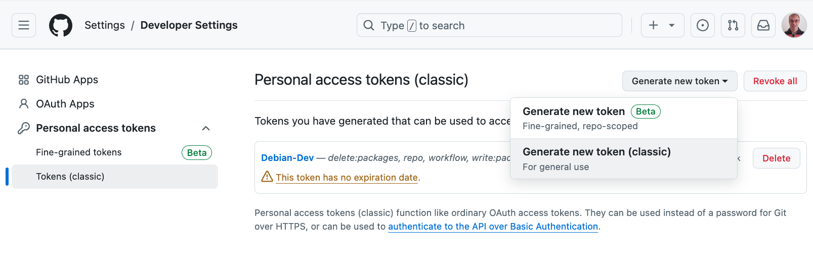
Completa la informació requerida i fes clic a “Generar token”:
- Introdueix un nom per al teu token.
🚀 Per exemple:
Token per a la màquina virtual del curs 0.
- Selecciona un temps d’expiració per al teu token.
🧐 Simplicitat:
Podeu posar 7 dies per a aquest laboratori.
Configuració de l’accés a GitHub des de la màquina virtual
Inicia una sessió a la terminal de la màquina virtual com a usuari normal.
Configura Git per utilitzar el token de GitHub executant la següent comanda:
git config --global github.token TOKEN🔑 Actualitza:
Reemplaça
TOKENpel token d’accés que has generat al pas anterior.Això emmagatzemarà el token de GitHub en la configuració global de Git al teu sistema Debian.
Verifica que el token s’hagi configurat correctament executant:
git config --global --get github.tokenSi tot ha anat bé, veuràs el token que has configurat.
Tasques
Creació d’equips
Formeu equips de 3 persones. Cada grup haurà d’escollir un líder, que serà el responsable de coordinar el treball, gestionar el repositori i fer el seguiment del projecte.
Trieu un nom d’equip original.
Preparació del projecte
Enllaç de la tasca a GitHub Classroom: https://classroom.github.com/a/HZQmHzs-)
El líder de l’equip haurà d’iniciar el grup a través de GitHub Classroom.
Introdueix el nom de l’equip.
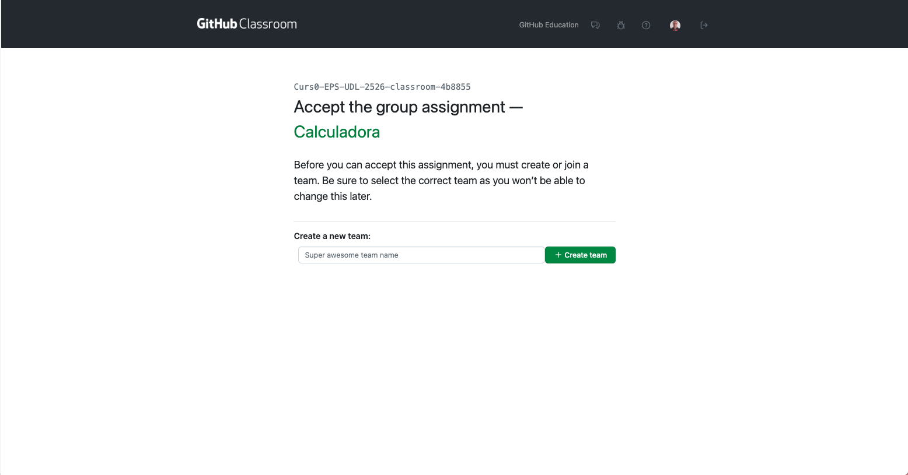
Accepta la tasca.
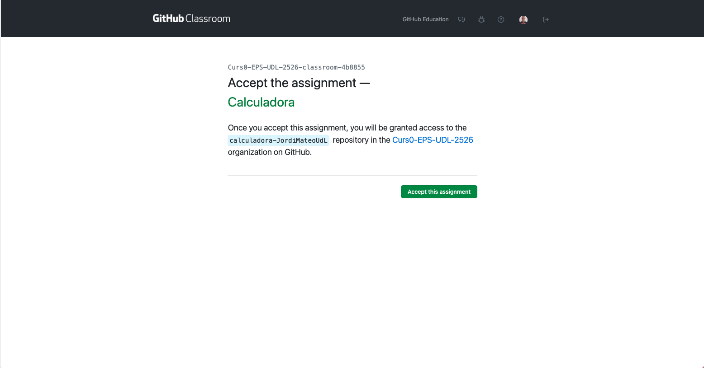
Un cop acceptada la tasca, es crearà un repositori per a l’equip.
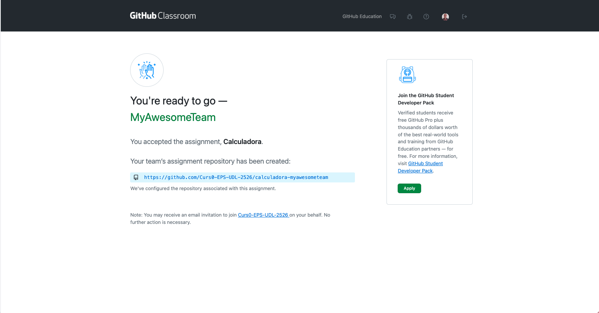
La resta de membres s’hi podran unir seleccionant el nom de l’equip al mateix enllaç https://classroom.github.com/a/HZQmHzs-.
El repositori base contindrà el codi inicial necessari i la seva estructura.
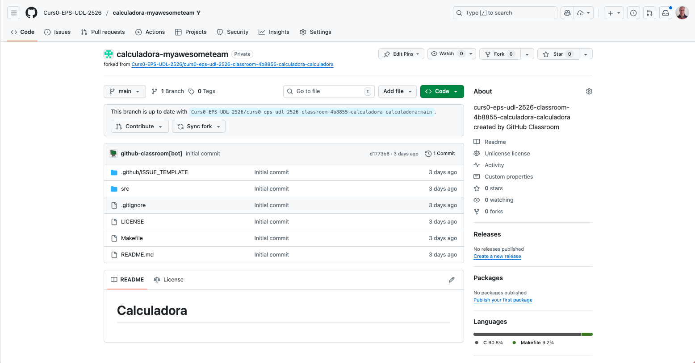
El líder és responsable d’assignar les tasques a cada membre mitjançant issues a GitHub.
Per fer-ho:
Fer clic a la pestanya Issues.
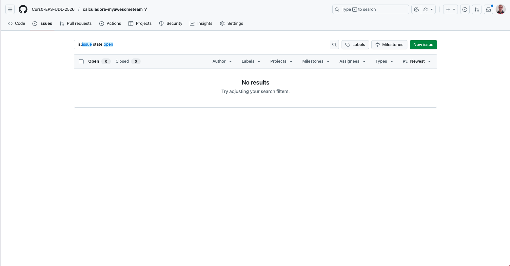
Fer clic a New issue, i seleccionar Feature request.
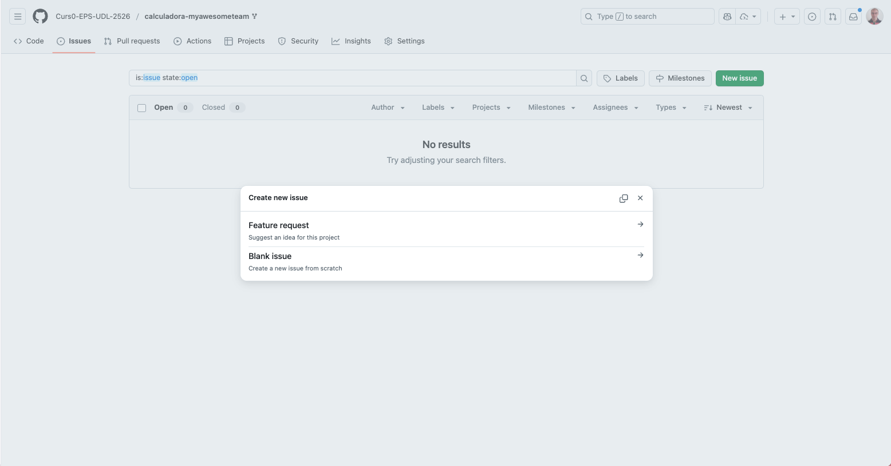
Us he preparat una plantilla per a les issues. Feu clic a Get started.
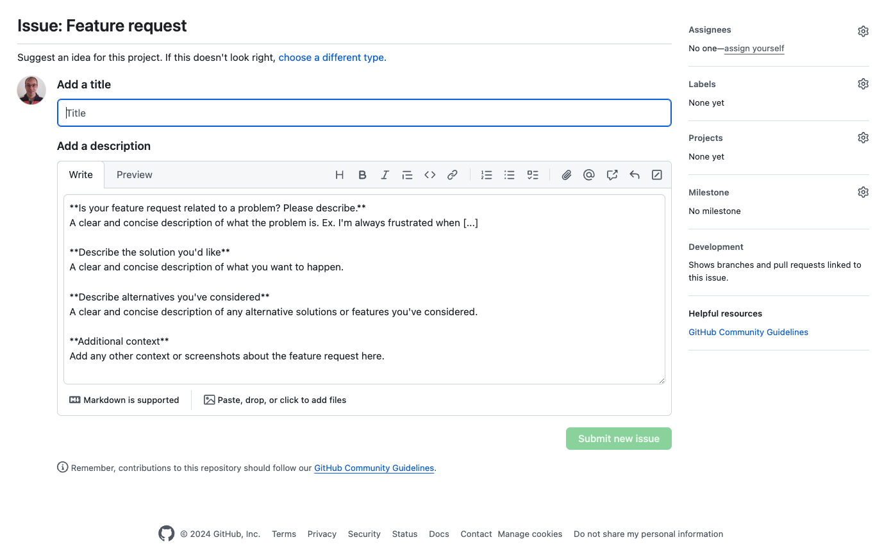
Omplir el títol i la descripció de la tasca.
Assignar la tasca a un membre de l’equip. Click a Assignees i seleccionar el membre.
Un cop assignada la tasca, fer clic a Submit new issue.
Llista de tasques i assignació:
Tasca Assignat a Implementació de la funció de suma líder Implementació de la funció de resta líder Implementació de la funció de multiplicació membre1 Implementació de la funció de divisió membre1 Implementació de la funció de potència membre2 Implementació de la funció de arrels quadrades membre2
Treball individual
Instal·la el paquet build-essential, que inclou les eines i llibreries necessàries per compilar i construir programes en C. Aquest paquet inclou el compilador GCC, que és comunament utilitzat per programar en C.
```sh
apt install build-essential -y
```Cada membre de l’equip haurà de clonar el repositori al seu ordinador i crear una branca
developper les seves tasques.git clone URL_DEL_REPOSITORI cd NOM_DEL_REPOSITORIℹ️ Informació
Si feu clic a Code al repositori, podreu copiar la URL del repositori.
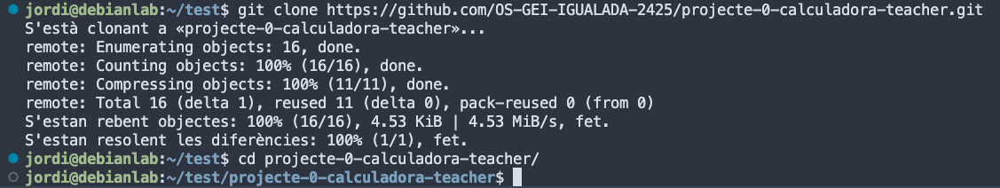
🚀 Recomanació
Tanqueu la sessió de VSCode i torneu-la a obrir però indicant la ruta a la carpeta del projecte. En el meu cas, seria
/home/jordi/test/projecte-0-calculadora-teacher. D’aquesta manera, podreu utilitzar les eines de VSCode per a desenvolupar el projecte.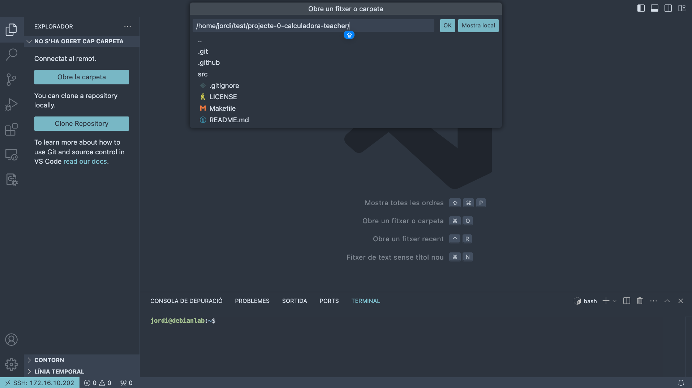
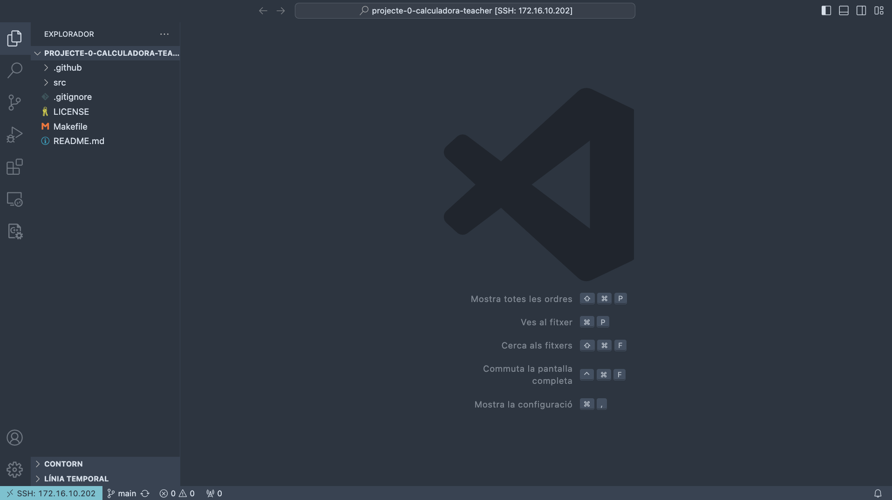
Per cada tasca assignada, el membre haurà de crear una branca amb el nom de la tasca. Per exemple, si la tasca és implementar la funció de suma, la branca es podria anomenar
feature-suma.git checkout -b feature-sumaObserveu que VSCode us mostra la branca actual a la part inferior esquerra.
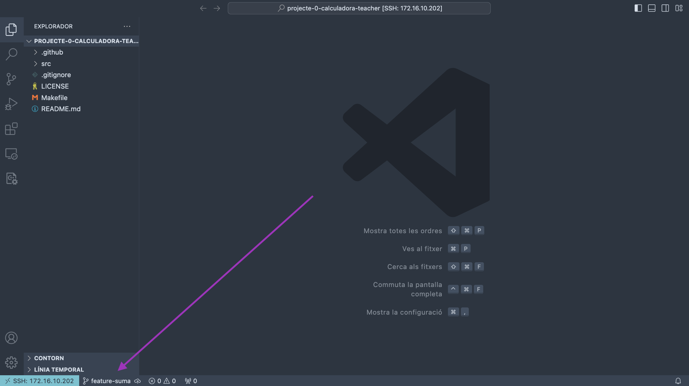
El codi de la funció suma podria ser:
// calc.c int suma(int a, int b) { return a + b; }// calc.h int suma(int a, int b);Compileu el codi i comproveu que funciona correctament.
make ./calc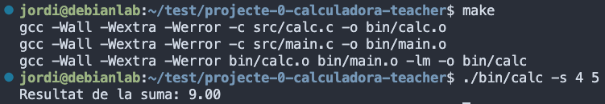
Si tot funciona correctament, el codi s’executarà i mostrarà el resultat de la suma.
Un cop finalitzada la tasca, fer un
commitamb els canvis realitzats indicant la tasca realitzada.Ho podeu fer amb les eines de VSCode o amb la terminal.
Si feu servir la terminal, la comanda seria:
git add src/calc.c src/calc.h src/main.c git commit -m "@feat: Implementació de la funció de suma"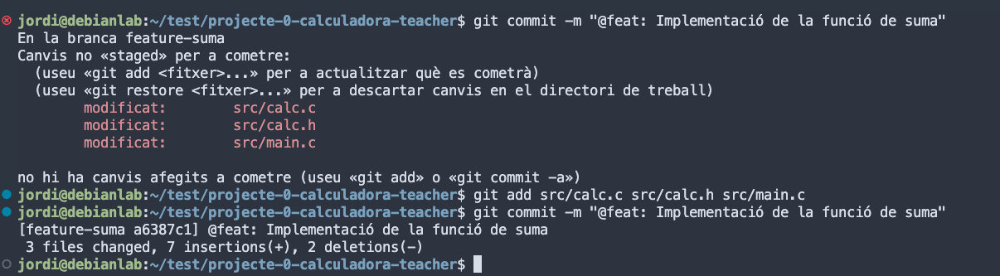
⚠️ Compte!
Si no feu
git addabans de fer elcommit, no es pujaran els canvis al repositori. Així que assegureu-vos de fergit addabans de fer elcommit.
💡 TIP:
Utilitza els missatges de commit per tancar les issues relacionades amb la tasca. Per exemple, si la tasca és implementar la funció de suma, el missatge de commit podria ser:
git commit -m "@feat: Implementació de la funció de suma. Closes #1". Si la tasca 1 és la implementació de la funció de suma.Per fer-ho amb VSCode, feu clic a la icona de la branca a la part inferior esquerra i seleccioneu Commit. Després, introduïu el missatge de commit i confirmeu-lo.
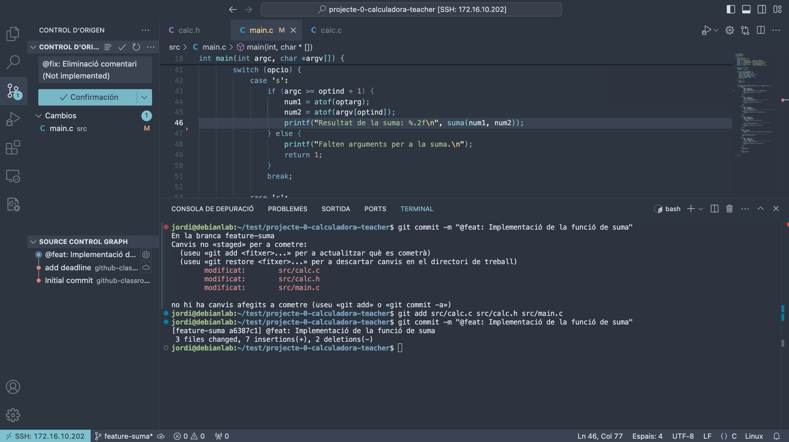
Repeteix els passos 2 i 3 per a cada tasca assignada. Sempre creant la branca des de
main. Per tornar a la brancamain, feugit checkout main. O bé, click a la branca a la part inferior esquerra de VSCode i seleccioneumain.Un cop finalitzades les seves tasques ajuntarem totes les branques a la nostra branca local
main.Per fer-ho, amb la terminal, farem:
git checkout -b main git merge feature-suma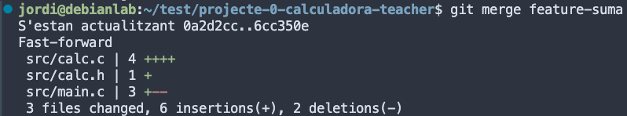
⚠️ Compte!
Si hi ha conflictes, caldrà resoldre’ls abans de fer el
commit.Per fer-ho amb VSCode, farem clic a la icona de la branca a la part inferior esquerra i seleccionarem Merge branch into current.
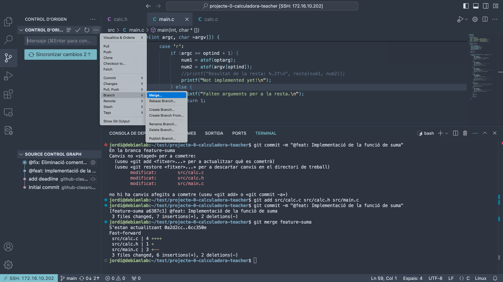
Seleccioneu la branca a ajuntar.
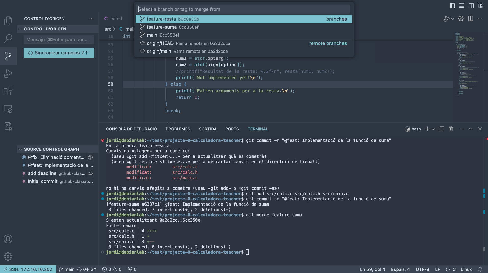
Quan integreu la segona funcionalitat (resta, multiplicació, etc.), caldrà fer un
mergeja que es detectaran conflictes.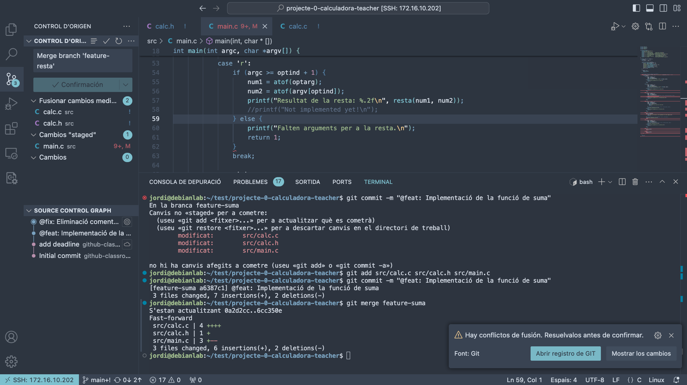
Un dels conflictes es el fitxer
calc.c. Cada branca ha modificat aquest fitxer i caldrà resoldre els conflictes. Acceptant els canvis de les dues branques. Podeu fer-ho manualment o amb el resolutor de conflictes de VSCode.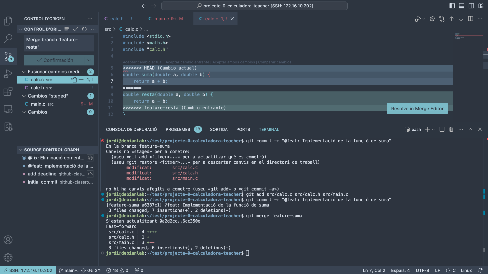
Repetiu el mateix procediment per tots els conflictes que apareguin.
Un cop resolts els conflictes, feu un
commitamb el missatge@feat: Merge branch feature-resta.
Ajuntar les tasques
Un cop totes les tasques estiguin implementades i ajuntades a la branca
main, caldrà testar que el codi funciona correctament.Aquestes tasques estaràn en la branca
maindel repositori local. Ara caldrà pujar aquestes tasques al repositori remot.- Crea a GitHub una branca remota anomenada
develop-<nom-usuari>i la vincularem amb la brancamainlocal.
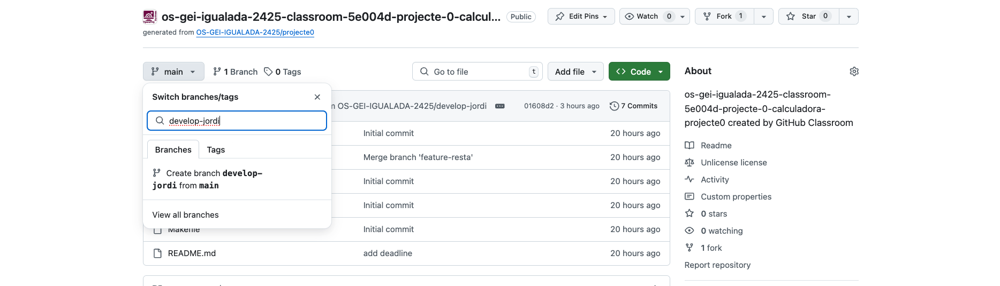
Branca develop Primer, caldrà actualitzar les branques remotes del repositori.
git fetch origin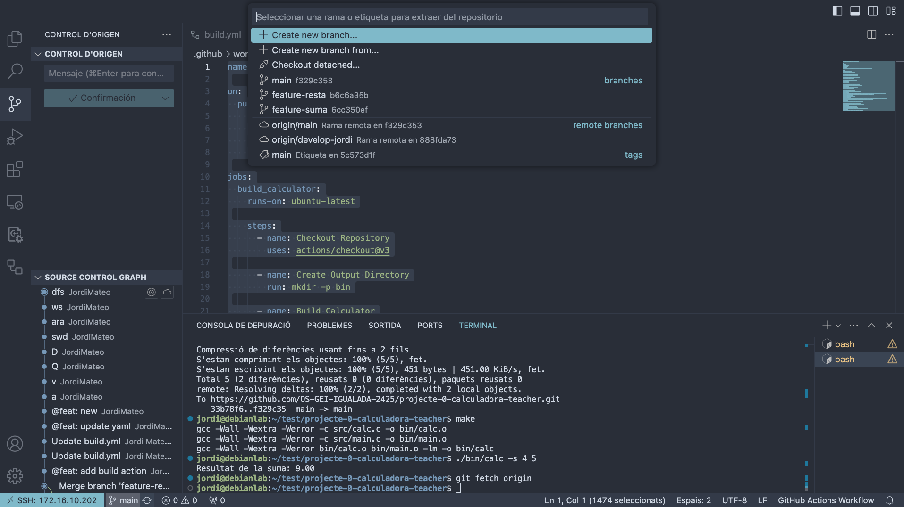
Un cop actualitzades les branques remotes, caldrà fer un
pushde la brancamaina la brancadevelop-<nom-usuari>.git push origin main:develop-<nom-usuari>- Crea a GitHub una branca remota anomenada
Un cop pujades totes les tasques al repositori remot, el líder actualitzarà les branques remotes de tots els membres de l’equip.
git fetch originFara un
mergede totes les tasques a la seva brancamain.Finalment, testeu que el codi funciona correctament.
Un cop testejat, caldrà pujar la branca
mainal repositori remot.git push origin main
Exercici Extra (opcional)
Podeu intentar superar els nivells del joc Learn Git Branching per practicar més les vostres habilitats amb Git. Centreu-vos en els exercicis REMOTE.